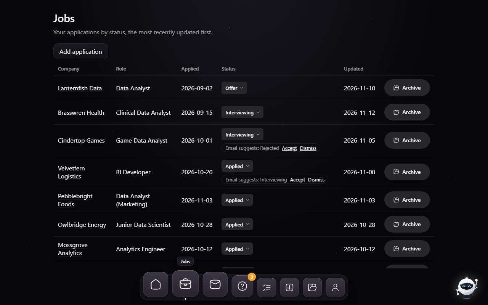
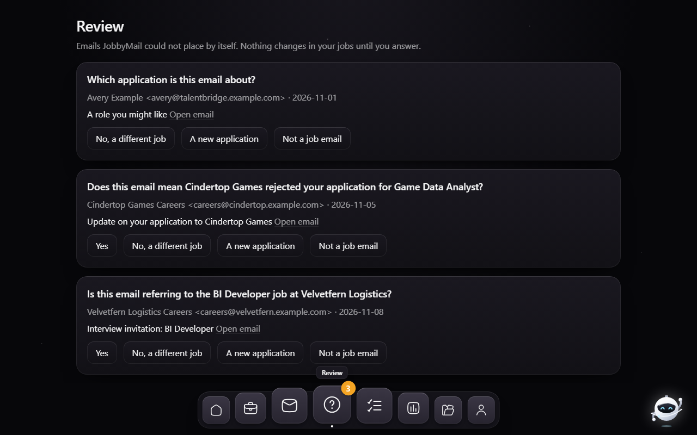
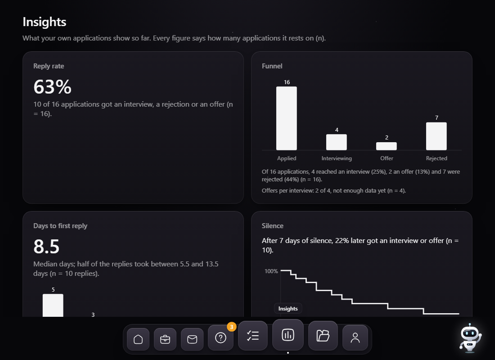
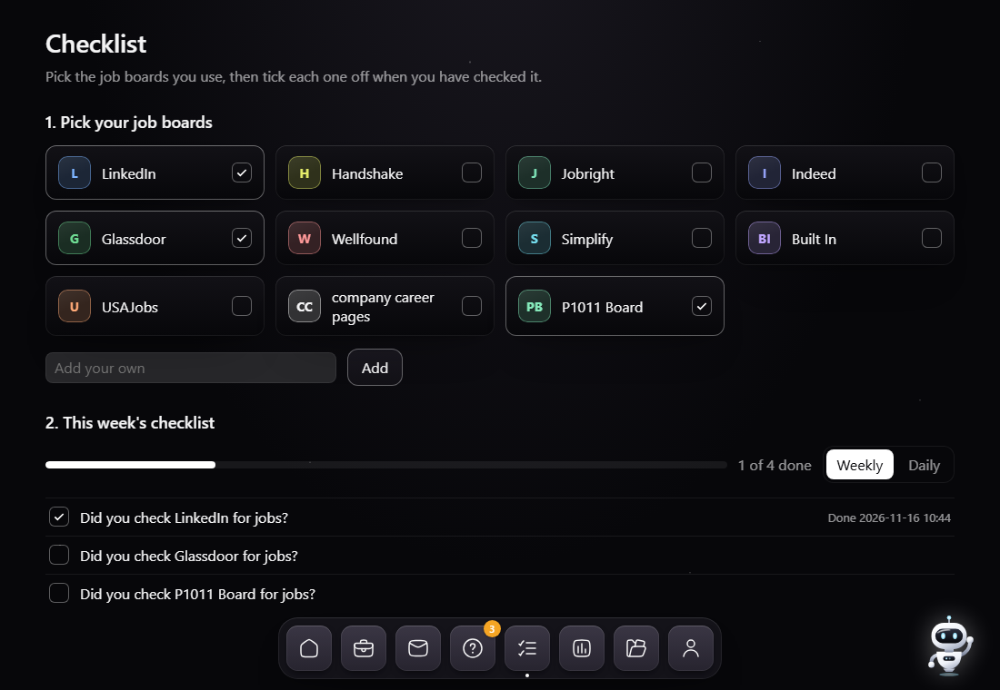

Your job applications, kept up to date by your inbox.
JobbyMail reads your mailbox, finds the emails about your applications, and fills in the table for you: applied, interviewing, offer, rejected. Everything stays on your computer.
Windows 10 and 11. Free. Works with Gmail.
What it does
A table that fills itself in
Apply to a job and the confirmation email adds a row with the company, the role and the date. An interview invite, an offer or a rejection changes the status, and the table reorders: offers first, then interviewing, applied and rejected.
It asks when it isn't sure
"Is this email referring to the Data Analyst job at Acme?" One click answers it. Nothing changes until you do.
You stay in charge
Change any status by hand, add an application that never sent an email, archive what's finished and undo it within four seconds.
Read the email in place
Click a job to see the email behind it. Tracking images are blocked until you choose to show them.
Your own numbers
Reply rate, days to a first reply, and when silence usually means no, each with how many applications it rests on.
A checklist for the search itself
Pick the job boards you use and tick each one off as you check it. The list clears every week, or every day if you prefer.
Jobby
A small space robot keeps you company and waves when something happens.
A look inside
These screenshots use invented companies and emails.




Private by design
Nothing is uploaded
Your mail, the database and the models stay on your PC. There is no JobbyMail server and no account.
Read-only
JobbyMail opens your mailbox read-only. It cannot send, move, mark or delete anything.
One place for the password
You connect with an app password, kept in the Windows credential store. "Delete all local data" removes it along with everything else.
Getting started
- Install. Run the installer; it needs no administrator rights. Windows will warn about an unknown publisher because the installer is not signed.
- Tell it about you. Your name, your field and the roles you're after.
- Connect Gmail. Turn on 2-Step Verification, create an app password in your Google Account, and paste it into the app.
- Pick how far back to read, and let the first scan run.
Outlook.com accounts are not supported yet: Microsoft no longer allows app passwords for them. Uninstalling keeps your data; use "Delete all local data" in the app first if you want it gone.